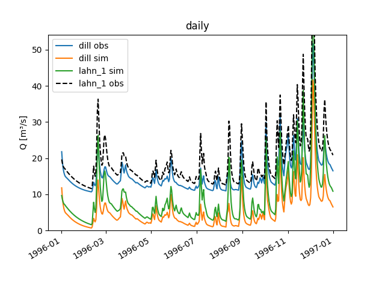
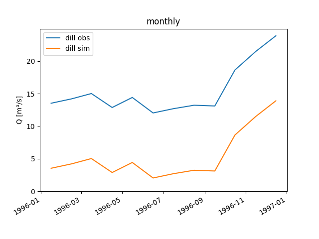
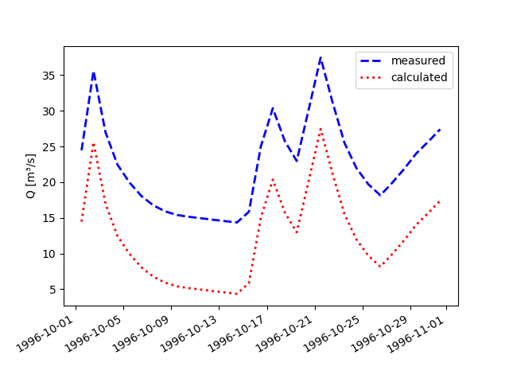
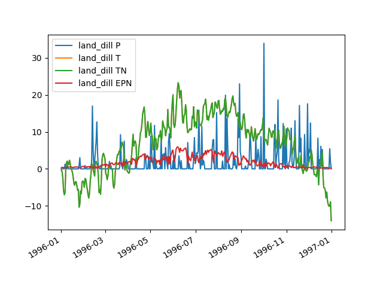
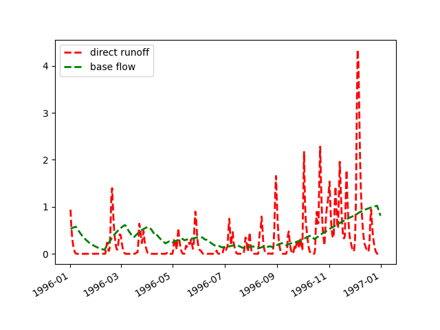
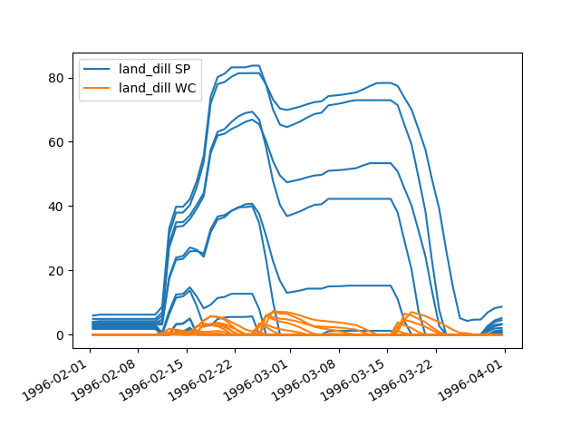
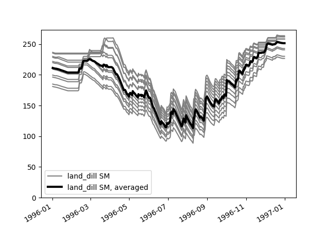

devicetools¶
This modules implements the fundamental features for structuring HydPy projects.
Module devicetools provides two Device subclasses, Node and Element.
In this documentation, “node” stands for an object of class Node, “element”
for an object of class Element, and “device” for either of them (you
cannot initialise objects of class Device directly). On the other hand,
“nodes”, for example, does not necessarily mean an object of class Nodes,
but any other group of Node objects as well.
Each element handles a single Model object and represents, for example,
a subbasin or a channel segment. The purpose of a node is to connect
different elements, and, for example, to pass the discharge calculated
for a subbasin outlet (from a first element) to the top of a channel
segment (to second element). Class Node and Element come with
specialised container classes (Nodes and Elements). The names of
individual nodes and elements serve as identity values, which is why
duplicate names are not permitted.
Note that module devicetools implements a registry mechanism both
for nodes and elements, preventing from instantiating an object with an
already assigned name. This mechanism allows to address the same node
or element in different network files (see module selectiontools).
Let us take class Node as an example. One can call its constructor
with the same name multiple times, but it returns already existing
nodes when available:
>>> from hydpy import Node
>>> node1 = Node("test1")
>>> node2a = Node("test2")
>>> node2b = Node("test2")
>>> node1 is node2a
False
>>> node2a is node2b
True
To get information on all currently registered nodes, call method
extract_new():
>>> Node.extract_new()
Nodes("test1", "test2")
Method extract_new() returns only those nodes prepared or
recovered after its last invocation:
>>> node1 = Node("test1")
>>> node3a = Node("test3")
>>> Node.extract_new()
Nodes("test1", "test3")
For a complete list of all available nodes, use method query_all():
>>> Node.query_all()
Nodes("test1", "test2", "test3")
When working interactively in the Python interpreter, it might be useful to clear the registry completely, sometimes. Do this with care, because defining nodes with already assigned names might result in surprises due to using their names for identification:
>>> nodes = Node.query_all()
>>> Node.clear_all()
>>> Node.query_all()
Nodes()
>>> node3b = Node("test3")
>>> node3b in nodes
True
>>> nodes.test3.name == node3b.name
True
>>> nodes.test3 is node3b
False
Module devicetools implements the following members:
DeviceTypeType variable.
DevicesTypeBoundType variable.
DevicesTypeUnboundType variable.
KeywordsSet of keyword arguments used to describe and search forElementandNodeobjects.
clear_registries_temporarily()Context manager for clearing the currentNode,Element, andFusedVariableregistries .
FusedVariableCombinesInputSequenceandOutputSequencesubclasses of different models, dealing with the same property, into a single variable.
ElementHandles aModelobject and connects it to other models viaNodeobjects.
-
class
hydpy.core.devicetools.Keywords(*names: str)[source]¶ Bases:
setSet of keyword arguments used to describe and search for
ElementandNodeobjects.-
device: Optional[Union[hydpy.core.devicetools.Node, hydpy.core.devicetools.Element]]¶
-
startswith(name: str) → List[str][source]¶ Return a list of all keywords, starting with the given string.
>>> from hydpy.core.devicetools import Keywords >>> keywords = Keywords("first_keyword", "second_keyword", ... "keyword_3", "keyword_4", ... "keyboard") >>> keywords.startswith("keyword") ['keyword_3', 'keyword_4']
-
endswith(name: str) → List[str][source]¶ Return a list of all keywords ending with the given string.
>>> from hydpy.core.devicetools import Keywords >>> keywords = Keywords("first_keyword", "second_keyword", ... "keyword_3", "keyword_4", ... "keyboard") >>> keywords.endswith("keyword") ['first_keyword', 'second_keyword']
-
contains(name: str) → List[str][source]¶ Return a list of all keywords containing the given string.
>>> from hydpy.core.devicetools import Keywords >>> keywords = Keywords("first_keyword", "second_keyword", ... "keyword_3", "keyword_4", ... "keyboard") >>> keywords.contains("keyword") ['first_keyword', 'keyword_3', 'keyword_4', 'second_keyword']
-
update(*names: Any) → None[source]¶ Before updating, the given names are checked to be valid variable identifiers.
>>> from hydpy.core.devicetools import Keywords >>> keywords = Keywords("first_keyword", "second_keyword", ... "keyword_3", "keyword_4", ... "keyboard") >>> keywords.update("test_1", "test 2") Traceback (most recent call last): ... ValueError: While trying to add the keyword `test 2` to device ?, the following error occurred: The given name string `test 2` does not define a valid variable identifier. ...
Note that even the first string (test1) is not added due to the second one (test 2) being invalid.
>>> keywords Keywords("first_keyword", "keyboard", "keyword_3", "keyword_4", "second_keyword")
After correcting the second string, everything works fine:
>>> keywords.update("test_1", "test_2") >>> keywords Keywords("first_keyword", "keyboard", "keyword_3", "keyword_4", "second_keyword", "test_1", "test_2")
-
add(name: Any) → None[source]¶ Before adding a new name, it is checked to be valid variable identifiers.
>>> from hydpy.core.devicetools import Keywords >>> keywords = Keywords("first_keyword", "second_keyword", ... "keyword_3", "keyword_4", ... "keyboard") >>> keywords.add("1_test") Traceback (most recent call last): ... ValueError: While trying to add the keyword `1_test` to device ?, the following error occurred: The given name string `1_test` does not define a valid variable identifier. ...
>>> keywords Keywords("first_keyword", "keyboard", "keyword_3", "keyword_4", "second_keyword")
After correcting the string, everything works fine:
>>> keywords.add("one_test") >>> keywords Keywords("first_keyword", "keyboard", "keyword_3", "keyword_4", "one_test", "second_keyword")
-
-
class
hydpy.core.devicetools.FusedVariable(name: str, *sequences: Union[Type[InputSequence], Type[OutputSequence]])[source]¶ Bases:
objectCombines
InputSequenceandOutputSequencesubclasses of different models, dealing with the same property, into a single variable.Class
FusedVariableis one possible type of the propertyvariableof classNode. We need it in some HydPy projects where the involved models do not only pass runoff to each other but share other types of data as well. Each project-specificFusedVariableobject serves as a “meta-type”, indicating which input and output sequences of the different models correlate and are thus connectable with each other.Using class
FusedVariableis easiest to explain by a concrete example. Assume, we useconv_v001to interpolate the air temperature for a specific location. We use this temperature as input to theevap_v001model, which requires this and other meteorological data to calculate potential evapotranspiration. Further, we pass the calculated potential evapotranspiration as input tolland_v2for calculating the actual evapotranspiration. Hence, we need to connect the output sequenceReferenceEvapotranspirationofevap_v001with the input sequencePEToflland_v2.Additionally,
lland_v2requires temperature data itself for modelling snow processes, introducing the problem that we need to use the same data (the output ofconv_v001) as the input of two differently named input sequences (AirTemperatureandTemLforevap_v001andlland_v2, respectively).For our concrete example, we need to create two
FusedVariableobjects. E combinesReferenceEvapotranspirationandPETand T combinesAirTemperatureandTemL(for convenience, we import their globally available aliases):>>> from hydpy import FusedVariable >>> from hydpy.inputs import lland_PET, evap_AirTemperature, lland_TemL >>> from hydpy.outputs import evap_ReferenceEvapotranspiration >>> E = FusedVariable("E", evap_ReferenceEvapotranspiration, lland_PET) >>> T = FusedVariable("T", evap_AirTemperature, lland_TemL)
Now we can construct the network:
Node t1 handles the original temperature and serves as the input node to element conv. We define the (arbitrarily selected) string Temp to be its variable.
Node e receives the potential evapotranspiration calculated by element evap and passes it to element lland. Node e thus receives the fused variable E.
Node t2 handles the interpolated temperature and serves as the outlet node of element conv and the input node to elements evap and lland. Node t2 thus receives the fused variable T.
>>> from hydpy import Node, Element >>> t1 = Node("t1", variable="Temp") >>> t2 = Node("t2", variable=T) >>> e = Node("e", variable=E) >>> conv = Element("element_conv", ... inlets=t1, ... outlets=t2) >>> evap = Element("element_evap", ... inputs=t2, ... outputs=e) >>> lland = Element("element_lland", ... inputs=(t2, e), ... outlets="node_q")
Now we can prepare the different model objects and assign them to their corresponding elements (note that parameters
InputCoordinatesandOutputCoordinatesofconv_v001first require information on the location of the relevant nodes):>>> from hydpy import prepare_model >>> model_conv = prepare_model("conv_v001") >>> model_conv.parameters.control.inputcoordinates(t1=(0, 0)) >>> model_conv.parameters.control.outputcoordinates(t2=(1, 1)) >>> model_conv.parameters.control.maxnmbinputs(1) >>> model_conv.parameters.update() >>> conv.model = model_conv >>> evap.model = prepare_model("evap_v001") >>> lland.model = prepare_model("lland_v2")
We assign a temperature value to node t1:
>>> t1.sequences.sim = -273.15
Model
conv_v001now can perform a simulation step and pass its output to node t2:>>> conv.model.simulate(0) >>> t2.sequences.sim sim(-273.15)
Without further configuration,
evap_v001cannot perform any simulation steps. Hence, we just call itsload_data()method to show that its input sequenceAirTemperatureis well connected to theSimsequence of node t2 and receives the correct data:>>> evap.model.load_data() >>> evap.model.sequences.inputs.airtemperature airtemperature(-273.15)
The output sequence
ReferenceEvapotranspirationis also well connected. Calling methodupdate_outputs()passes its (manually set) value to node e, respectively:>>> evap.model.sequences.fluxes.referenceevapotranspiration = 999.9 >>> evap.model.update_outputs() >>> e.sequences.sim sim(999.9)
Finally, both input sequences
TemLandPETreceive the current values of nodes t2 and e:>>> lland.model.load_data() >>> lland.model.sequences.inputs.teml teml(-273.15) >>> lland.model.sequences.inputs.pet pet(999.9)
When defining fused variables, class
FusedVariableperforms some registration behind the scenes, similar as classesNodeandElementdo. Again, the name works as the identifier, and we force the same fused variable to exist only once, even when defined in different selection files repeatedly. Hence, when we repeat the definition from above, we get the same object:>>> Test = FusedVariable("T", evap_AirTemperature, lland_TemL) >>> T is Test True
Changing the member sequences of an existing fused variable is not allowed:
>>> from hydpy.inputs import hland_T >>> FusedVariable("T", hland_T, lland_TemL) Traceback (most recent call last): ... ValueError: The sequences combined by a FusedVariable object cannot be changed. The already defined sequences of the fused variable `T` are `evap_AirTemperature and lland_TemL` instead of `hland_T and lland_TemL`. Keep in mind, that `name` is the unique identifier for fused variable instances.
Defining additional fused variables with the same member sequences does not seem advisable, but is allowed:
>>> Temp = FusedVariable("Temp", evap_AirTemperature, lland_TemL) >>> T is Temp False
To get an overview of the already existing fused variables, call method
get_registry():>>> len(FusedVariable.get_registry()) 3
Principally, you can clear the registry via method
clear_registry(), but remember it does not removeFusedVariableobjects from the running process being otherwise referenced:>>> FusedVariable.clear_registry() >>> FusedVariable.get_registry() () >>> t2.variable FusedVariable("T", evap_AirTemperature, lland_TemL)
-
classmethod
get_registry() → Tuple[hydpy.core.devicetools.FusedVariable, …][source]¶ Get all
FusedVariableobjects initialised so far.
-
classmethod
clear_registry() → None[source]¶ Clear the registry from all
FusedVariableobjects initialised so far.Use this method only for good reasons!
-
class
hydpy.core.devicetools.Devices(*values: Optional[Union[DeviceType, str, Iterable[Union[DeviceType, str]]]], mutable: bool = True)[source]¶ Bases:
Generic[hydpy.core.devicetools.DeviceType]Base class for class
Elementsand classNodes.The following features are common to class
Nodesand classElements. We arbitrarily select classNodesfor all examples.To initialise a
Nodescollection class, pass a variable number ofstrorNodeobjects. Strings are used to create new or query already existing nodes automatically:>>> from hydpy import Node, Nodes >>> nodes = Nodes("na", ... Node("nb", variable="W"), ... Node("nc", keywords=("group_a", "group_1")), ... Node("nd", keywords=("group_a", "group_2")), ... Node("ne", keywords=("group_b", "group_1")))
NodesandElementsobjects are containers supporting attribute access. You can access each node or element directly by its name:>>> nodes.na Node("na", variable="Q")
Wrong node names result in the following error message:
>>> nodes.wrong Traceback (most recent call last): ... AttributeError: The selected Nodes object has neither a `wrong` attribute nor does it handle a Node object with name or keyword `wrong`, which could be returned.
As explained in more detail in the documentation on property
keywords, you can also use the keywords of the individual nodes to query the relevant ones:>>> nodes.group_a Nodes("nc", "nd")
Especially in this context, you might find it useful to also get an iterable object in case no node or only a single node is available:
>>> Nodes.forceiterable = True >>> nodes.wrong Nodes() >>> nodes.na Nodes("na") >>> Nodes.forceiterable = False
Attribute deleting is supported:
>>> "na" in nodes True >>> del nodes.na >>> "na" in nodes False >>> del nodes.na Traceback (most recent call last): ... AttributeError: The actual Nodes object does not handle a Node object named `na` which could be removed, and deleting other attributes is not supported.
However, shown by the next example, setting devices via attribute access could result in inconsistencies and is not allowed (see method
add_device()instead):>>> nodes.NF = Node("nf") Traceback (most recent call last): ... AttributeError: Setting attributes of Nodes objects could result in confusion whether a new attribute should be handled as a Node object or as a "normal" attribute and is thus not support, hence `NF` is rejected.
NodesandElementsobjects support iteration:>>> len(nodes) 4 >>> for node in nodes: ... print(node.name, end=",") nb,nc,nd,ne,
The binary operators +, +=, - and -= support adding and removing single devices or groups of devices:
>>> nodes Nodes("nb", "nc", "nd", "ne") >>> nodes - Node("nc") Nodes("nb", "nd", "ne")
Nodes(“nb”, “nc”, “nd”, “ne”) >>> nodes -= Nodes(“nc”, “ne”) >>> nodes Nodes(“nb”, “nd”)
>>> nodes + "nc" Nodes("nb", "nc", "nd") >>> nodes Nodes("nb", "nd") >>> nodes += ("nc", Node("ne")) >>> nodes Nodes("nb", "nc", "nd", "ne")
Attempts to add already existing or to remove non-existing devices do no harm:
>>> nodes Nodes("nb", "nc", "nd", "ne") >>> nodes + ("nc", "ne") Nodes("nb", "nc", "nd", "ne") >>> nodes - Node("na") Nodes("nb", "nc", "nd", "ne")
Comparisons are supported, with “x < y” being
True, if “x” is a subset of “y”:>>> subgroup = Nodes("nc", "ne") >>> subgroup < nodes, nodes < subgroup, nodes < nodes (True, False, False) >>> subgroup <= nodes, nodes <= subgroup, nodes <= nodes (True, False, True) >>> subgroup == nodes, nodes == subgroup, nodes == nodes, nodes == "nodes" (False, False, True, False) >>> subgroup != nodes, nodes != subgroup, nodes != nodes, nodes != "nodes" (True, True, False, True) >>> subgroup >= nodes, nodes >= subgroup, nodes >= nodes (False, True, True) >>> subgroup > nodes, nodes > subgroup, nodes > nodes (False, True, False)
Passing wrong arguments to the constructor of class
Noderesults in errors like the following:>>> from hydpy import Element >>> Nodes("na", Element("ea")) Traceback (most recent call last): ... TypeError: While trying to initialise a `Nodes` object, the following error occurred: The given (sub)value `Element("ea")` is not an instance of the following classes: Node and str.
-
add_device(device: Union[DeviceType, str]) → None[source]¶ Add the given
NodeorElementobject to the actualNodesorElementsobject.You can pass either a string or a device:
>>> from hydpy import Nodes >>> nodes = Nodes() >>> nodes.add_device("old_node") >>> nodes Nodes("old_node") >>> nodes.add_device("new_node") >>> nodes Nodes("new_node", "old_node")
Method
add_device()is disabled for immutableNodesandElementsobjects:>>> nodes.mutable = False >>> nodes.add_device("newest_node") Traceback (most recent call last): ... RuntimeError: While trying to add the device `newest_node` to a Nodes object, the following error occurred: Adding devices to immutable Nodes objects is not allowed.
-
remove_device(device: Union[DeviceType, str]) → None[source]¶ Remove the given
NodeorElementobject from the actualNodesorElementsobject.You can pass either a string or a device:
>>> from hydpy import Node, Nodes >>> nodes = Nodes("node_x", "node_y") >>> node_x, node_y = nodes >>> nodes.remove_device(Node("node_y")) >>> nodes Nodes("node_x") >>> nodes.remove_device(Node("node_x")) >>> nodes Nodes() >>> nodes.remove_device(Node("node_z")) Traceback (most recent call last): ... ValueError: While trying to remove the device `node_z` from a Nodes object, the following error occurred: The actual Nodes object does not handle such a device.
Method
remove_device()is disabled for immutableNodesandElementsobjects:>>> nodes.mutable = False >>> nodes.remove_device("node_z") Traceback (most recent call last): ... RuntimeError: While trying to remove the device `node_z` from a Nodes object, the following error occurred: Removing devices from immutable Nodes objects is not allowed.
-
property
names¶ A sorted tuple of the names of the handled devices.
>>> from hydpy import Nodes >>> Nodes("a", "c", "b").names ('a', 'b', 'c')
-
property
devices¶ A tuple of the handled devices sorted by the device names.
>>> from hydpy import Nodes >>> for node in Nodes("a", "c", "b").devices: ... print(repr(node)) Node("a", variable="Q") Node("b", variable="Q") Node("c", variable="Q")
-
property
keywords¶ A set of all keywords of all handled devices.
In addition to attribute access via device names,
NodesandElementsobjects allow for attribute access via keywords, allowing for an efficient search of certain groups of devices. Let us use the example from above, where the nodes na and nb have no keywords, but each of the other three nodes both belongs to either group_a or group_b and group_1 or group_2:>>> from hydpy import Node, Nodes >>> nodes = Nodes("na", ... Node("nb", variable="W"), ... Node("nc", keywords=("group_a", "group_1")), ... Node("nd", keywords=("group_a", "group_2")), ... Node("ne", keywords=("group_b", "group_1"))) >>> nodes Nodes("na", "nb", "nc", "nd", "ne") >>> sorted(nodes.keywords) ['group_1', 'group_2', 'group_a', 'group_b']
If you are interested in inspecting all devices belonging to group_a, select them via this keyword:
>>> subgroup = nodes.group_1 >>> subgroup Nodes("nc", "ne")
You can further restrict the search by also selecting the devices belonging to group_b, which holds only for node “e”, in the given example:
>>> subsubgroup = subgroup.group_b >>> subsubgroup Node("ne", variable="Q", keywords=["group_1", "group_b"])
Note that the keywords already used for building a device subgroup are not informative anymore (as they hold for each device) and are thus not shown anymore:
>>> sorted(subgroup.keywords) ['group_a', 'group_b']
The latter might be confusing if you intend to work with a device subgroup for a longer time. After copying the subgroup, all keywords of the contained devices are available again:
>>> from copy import copy >>> newgroup = copy(subgroup) >>> sorted(newgroup.keywords) ['group_1', 'group_a', 'group_b']
-
search_keywords(*keywords: str) → DevicesTypeBound[source]¶ Search for all devices handling at least one of the given keywords and return them.
>>> from hydpy import Node, Nodes >>> nodes = Nodes("na", ... Node("nb", variable="W"), ... Node("nc", keywords=("group_a", "group_1")), ... Node("nd", keywords=("group_a", "group_2")), ... Node("ne", keywords=("group_b", "group_1"))) >>> nodes.search_keywords("group_c") Nodes() >>> nodes.search_keywords("group_a") Nodes("nc", "nd") >>> nodes.search_keywords("group_a", "group_1") Nodes("nc", "nd", "ne")
-
open_files(idx: int = 0) → None[source]¶ Call method
open_files()oropen_files()of all containedNodeorElementobjects.
-
close_files() → None[source]¶ Call method
close_files()orclose_files()of all containedNodeorElementobjects.
-
copy() → DevicesTypeBound[source]¶ Return a shallow copy of the actual
NodesorElementsobject.Method
copy()returns a semi-flat copy ofNodesorElementsobjects, due to their devices being not copyable:>>> from hydpy import Nodes >>> old = Nodes("x", "y") >>> import copy >>> new = copy.copy(old) >>> new == old True >>> new is old False >>> new.devices is old.devices False >>> new.x is new.x True
Changing the
nameof a device is recognised both by the original and the copied collection objects:>>> new.x.name = "z" >>> old.z Node("z", variable="Q") >>> new.z Node("z", variable="Q")
Deep copying is permitted due to the above reason:
>>> copy.deepcopy(old) Traceback (most recent call last): ... NotImplementedError: Deep copying of Nodes objects is not supported, as it would require to make deep copies of the Node objects themselves, which is in conflict with using their names as identifiers.
-
-
class
hydpy.core.devicetools.Nodes(*values: Optional[Union[DeviceType, str, Iterable[Union[DeviceType, str]]]], mutable: bool = True)[source]¶ Bases:
hydpy.core.devicetools.Devices[Node]A container class for handling
Nodeobjects.For the general usage of
Nodesobjects, please see the documentation on its base classDevices.-
static
get_contentclass() → Type[hydpy.core.devicetools.Node][source]¶ Return class
Node.
-
prepare_allseries(ramflag: bool = True) → None[source]¶ Call methods
prepare_simseries()andprepare_obsseries().
-
prepare_simseries(ramflag: bool = True) → None[source]¶ Call method
prepare_simseries()of all handledNodeobjects.
-
prepare_obsseries(ramflag: bool = True) → None[source]¶ Call method
prepare_obsseries()of all handledNodeobjects.
-
load_allseries() → None[source]¶ Call methods
load_simseries()andload_obsseries().
-
load_simseries() → None[source]¶ Call method
load_ext()of allSimobjects with an activatedmemoryflag.
-
load_obsseries() → None[source]¶ Call method
load_ext()of allObsobjects with an activatedmemoryflag.
-
save_allseries() → None[source]¶ Call methods
save_simseries()andsave_obsseries().
-
save_simseries() → None[source]¶ Call method
save_ext()of allSimobjects with an activatedmemoryflag.
-
save_obsseries() → None[source]¶ Call method
save_ext()of allObsobjects with an activatedmemoryflag.
-
static
-
class
hydpy.core.devicetools.Elements(*values: Optional[Union[DeviceType, str, Iterable[Union[DeviceType, str]]]], mutable: bool = True)[source]¶ Bases:
hydpy.core.devicetools.Devices[Element]A container for handling
Elementobjects.For the general usage of
Elementsobjects, please see the documentation on its base classDevices.-
static
get_contentclass() → Type[hydpy.core.devicetools.Element][source]¶ Return class
Element.
-
prepare_models() → None[source]¶ Call method
prepare_model()of all handleElementobjects.We show, based the LahnH example project, that method
init_model()prepares theModelobjects of all elements, including building the required connections and updating the derived parameters:>>> from hydpy.examples import prepare_full_example_1 >>> prepare_full_example_1() >>> from hydpy import attrready, HydPy, pub, TestIO >>> with TestIO(): ... hp = HydPy("LahnH") ... pub.timegrids = "1996-01-01", "1996-02-01", "1d" ... hp.prepare_network() ... hp.prepare_models() >>> hp.elements.land_dill.model.parameters.derived.dt dt(0.000833)
Wrong control files result in error messages like the following:
>>> with TestIO(): ... with open("LahnH/control/default/land_dill.py", "a") as file_: ... _ = file_.write("zonetype(-1)") ... hp.prepare_models() Traceback (most recent call last): ... ValueError: While trying to initialise the model object of element `land_dill`, the following error occurred: While trying to load the control file `...land_dill.py`, the following error occurred: At least one value of parameter `zonetype` of element `?` is not valid.
By default, missing control files result in exceptions:
>>> del hp.elements.land_dill.model >>> import os >>> with TestIO(): ... os.remove("LahnH/control/default/land_dill.py") ... hp.prepare_models() Traceback (most recent call last): ... FileNotFoundError: While trying to initialise the model object of element `land_dill`, the following error occurred: While trying to load the control file `...land_dill.py`, the following error occurred: ... >>> attrready(hp.elements.land_dill, "model") False
When building new, still incomplete HydPy projects, this behaviour can be annoying. After setting the option
warnmissingcontrolfiletoFalse, missing control files only result in a warning:>>> with TestIO(): ... with pub.options.warnmissingcontrolfile(True): ... hp.prepare_models() Traceback (most recent call last): ... UserWarning: Due to a missing or no accessible control file, no model could be initialised for element `land_dill` >>> attrready(hp.elements.land_dill, "model") False
-
init_models() → None[source]¶ Deprecated: use method
prepare_models()instead.>>> from hydpy import Elements >>> from unittest import mock >>> with mock.patch.object(Elements, "prepare_models") as mocked: ... elements = Elements() ... elements.init_models() Traceback (most recent call last): ... hydpy.core.exceptiontools.HydPyDeprecationWarning: Method `init_models` of class `Elements` is deprecated. Use method `prepare_models` instead. >>> mocked.call_args_list [call()]
-
save_controls(parameterstep: Optional[timetools.PeriodConstrArg] = None, simulationstep: Optional[timetools.PeriodConstrArg] = None, auxfiler: Optional[auxfiletools.Auxfiler] = None)[source]¶ Save the control parameters of the
Modelobject handled by eachElementobject and eventually the ones handled by the givenAuxfilerobject.
-
load_conditions() → None[source]¶ Save the initial conditions of the
Modelobject handled by eachElementobject.
-
save_conditions() → None[source]¶ Save the calculated conditions of the
Modelobject handled by eachElementobject.
-
trim_conditions() → None[source]¶ Call method
trim_conditions()of theSequencesobject handled (indirectly) by eachElementobject.
-
reset_conditions() → None[source]¶ Call method
reset()of theSequencesobject handled (indirectly) by eachElementobject.
-
property
conditions¶ A nested dictionary containing the values of all
ConditionSequenceobjects of all currently handled models.See the documentation on property
conditionsfor further information.
-
prepare_allseries(ramflag: bool = True) → None[source]¶ Call method
prepare_allseries()of all handledElementobjects.
-
prepare_inputseries(ramflag: bool = True) → None[source]¶ Call method
prepare_inputseries()of all handledElementobjects.
-
prepare_fluxseries(ramflag: bool = True) → None[source]¶ Call method
prepare_fluxseries()of all handledElementobjects.
-
prepare_stateseries(ramflag: bool = True) → None[source]¶ Call method
prepare_stateseries()of all handledElementobjects.
-
load_allseries() → None[source]¶ Call methods
load_inputseries(),load_fluxseries(), andload_stateseries().
-
load_inputseries() → None[source]¶ Call method
load_ext()of allInputSequenceobjects with an activatedmemoryflag.
-
load_fluxseries() → None[source]¶ Call method
load_ext()of allFluxSequenceobjects with an activatedmemoryflag.
-
load_stateseries() → None[source]¶ Call method
load_ext()of allStateSequenceobjects with an activatedmemoryflag.
-
save_allseries() → None[source]¶ Call methods
save_inputseries(),save_fluxseries(), andsave_stateseries().
-
save_inputseries() → None[source]¶ Call method
save_ext()of allInputSequenceobjects with an activatedmemoryflag.
-
save_fluxseries() → None[source]¶ Call method
save_ext()of allFluxSequenceobjects with an activatedmemoryflag.
-
save_stateseries() → None[source]¶ Call method
save_ext()of allStateSequenceobjects with an activatedmemoryflag.
-
static
-
class
hydpy.core.devicetools.Device(value, *args, **kwargs)[source]¶ Bases:
Generic[hydpy.core.devicetools.DevicesTypeUnbound]Base class for class
Elementand classNode.-
classmethod
query_all() → DevicesTypeUnbound[source]¶ Get all
NodeorElementobjects initialised so far.See the main documentation on module
devicetoolsfor further information.
-
classmethod
extract_new() → DevicesTypeUnbound[source]¶ Gather all “new”
NodeorElementobjects.See the main documentation on module
devicetoolsfor further information.
-
classmethod
clear_all() → None[source]¶ Clear the registry from all initialised
NodeorElementobjects.See the main documentation on module
devicetoolsfor further information.
-
property
name¶ Name of the actual
NodeorElementobject.Device names serve as identifiers, as explained in the main documentation on module
devicetools. So define them carefully:>>> from hydpy import Node >>> Node.clear_all() >>> node1, node2 = Node("n1"), Node("n2") >>> node1 is Node("n1") True >>> node1 is Node("n2") False
Each device name must be a valid variable identifier (see function
valid_variable_identifier()), to allow for attribute access:>>> from hydpy import Nodes >>> nodes = Nodes(node1, "n2") >>> nodes.n1 Node("n1", variable="Q")
Invalid variable identifiers result in errors like the following:
>>> node3 = Node("n 3") Traceback (most recent call last): ... ValueError: While trying to initialize a `Node` object with value `n 3` of type `str`, the following error occurred: The given name string `n 3` does not define a valid variable identifier. ...
When you change the name of a device (only do this for a good reason), the corresponding keys of all related
NodesandElementsobjects (as well as of the internal registry) change automatically:>>> Node.query_all() Nodes("n1", "n2") >>> node1.name = "n1a" >>> nodes Nodes("n1a", "n2") >>> Node.query_all() Nodes("n1a", "n2")
-
property
keywords¶ Keywords describing the actual
NodeorElementobject.The keywords are contained within a
Keywordsobject:>>> from hydpy import Node >>> node = Node("n", keywords="word0") >>> node.keywords Keywords("word0")
Assigning new words does not overwrite already existing ones. You are allowed to add them individually or within iterable objects:
>>> node.keywords = "word1" >>> node.keywords = "word2", "word3" >>> node.keywords Keywords("word0", "word1", "word2", "word3")
Additionally, passing additional keywords to the constructor of class
NodeorElementworks also fine:>>> Node("n", keywords=("word3", "word4", "word5")) Node("n", variable="Q", keywords=["word0", "word1", "word2", "word3", "word4", "word5"])
You can delete all keywords at once:
>>> del node.keywords >>> node.keywords Keywords()
-
classmethod
-
class
hydpy.core.devicetools.Node(value, *args, **kwargs)[source]¶ Bases:
hydpy.core.devicetools.Device[hydpy.core.devicetools.Nodes]Handles the data flow between
Elementobjects.Nodeobjects always handle two sequences, aSimobject for simulated values and anObsobject for measured values:>>> from hydpy import Node >>> node = Node("test") >>> for sequence in node.sequences: ... print(sequence) sim(0.0) obs(0.0)
Each node can handle an arbitrary number of “input” and “output” elements, available as instance attributes entries and exits, respectively:
>>> node.entries Elements() >>> node.exits Elements()
You cannot (or at least should not) add new elements manually:
>>> node.entries = "element" Traceback (most recent call last): ... AttributeError: can't set attribute >>> node.exits.add_device("element") Traceback (most recent call last): ... RuntimeError: While trying to add the device `element` to a Elements object, the following error occurred: Adding devices to immutable Elements objects is not allowed.
Instead, see the documentation on class
Elementon how to connectNodeandElementobjects properly.-
masks= defaultmask of module hydpy.core.masktools¶
-
sequences: hydpy.core.sequencetools.NodeSequences¶
-
classmethod
get_handlerclass() → Type[hydpy.core.devicetools.Nodes][source]¶ Return class
Nodes.
-
property
exits¶ Group of
Elementobjects which query the simulated or observed value of the actualNodeobject.
-
property
variable¶ The variable handled by the actual
Nodeobject.By default, we suppose that nodes route discharge:
>>> from hydpy import Node >>> node = Node("test1") >>> node.variable 'Q'
Each other string, as well as each
InputSequencesubclass, is acceptable (for further information see the documentation on methodconnect()):>>> Node("test2", variable="H") Node("test2", variable="H") >>> from hydpy.models.hland.hland_inputs import T >>> Node("test3", variable=T) Node("test3", variable=hland_T)
The last above example shows that the string representations of nodes handling “class variables” use the aliases importable from the top-level of the HydPy package:
>>> from hydpy.inputs import hland_P >>> Node("test4", variable=hland_P) Node("test4", variable=hland_P)
For some complex HydPy projects, one may need to fall back on
FusedVariableobjects. The string representation then relies on the name of the fused variable:>>> from hydpy import FusedVariable >>> from hydpy.inputs import lland_Nied >>> Precipitation = FusedVariable("Precip", hland_P, lland_Nied) >>> Node("test5", variable=Precipitation) Node("test5", variable=Precip)
To avoid confusion, one cannot change property
variable:>>> node.variable = "H" Traceback (most recent call last): ... AttributeError: can't set attribute >>> Node("test1", variable="H") Traceback (most recent call last): ... ValueError: The variable to be represented by a Node instance cannot be changed. The variable of node `test1` is `Q` instead of `H`. Keep in mind, that `name` is the unique identifier of node objects.
-
property
deploymode¶ Defines the kind of information a node offers its exit elements.
HydPy supports the following modes:
newsim: Deploy the simulated values calculated just recently. newsim is the default mode, used, for example, when a node receives a discharge value from an upstream element and passes it to the downstream element directly.
obs: Deploy observed values instead of simulated values. The node still receives the simulated values from its upstream element(s). However, it deploys values to its downstream element(s), which are defined externally. Usually, these values are observations made available within a time-series file. See the documentation on module
sequencetoolsfor further information on file specifications.oldsim: Similar to mode obs. However, it is usually applied when a node is supposed to deploy simulated values which have been calculated in a previous simulation run and stored in a sequence file.
obs_newsim: Combination of mode obs and newsim. Mode obs_newsim gives priority to the provision of observation values. New simulation values serve as a replacement for missing observed values.
obs_oldsim: Combination of mode obs and oldsim. Mode obs_oldsim gives priority to the provision of observation values. Old simulation values serve as a replacement for missing observed values.
One relevant difference between modes obs and oldsim is that the external values are either handled by the obs or the sim sequence object. Hence, if you select the oldsim mode, the values of the upstream elements calculated within the current simulation are not available (e.g. for parameter calibration) after the simulation finishes.
Please refer to the documentation on method
simulate()of classHydPy, which provides for some application examples.>>> from hydpy import Node >>> node = Node("test") >>> node.deploymode 'newsim' >>> node.deploymode = "obs" >>> node.deploymode 'obs' >>> node.deploymode = "oldsim" >>> node.deploymode 'oldsim' >>> node.deploymode = "obs_newsim" >>> node.deploymode 'obs_newsim' >>> node.deploymode = "obs_oldsim" >>> node.deploymode 'obs_oldsim' >>> node.deploymode = "newsim" >>> node.deploymode 'newsim' >>> node.deploymode = "oldobs" Traceback (most recent call last): ... ValueError: When trying to set the routing mode of node `test`, the value `oldobs` was given, but only the following values are allowed: `newsim`, `oldsim`, `obs`, `obs_newsim`, and `obs_oldsim`.
-
get_double(group: str) → hydpy.cythons.autogen.pointerutils.Double[source]¶ Return the
Doubleobject appropriate for the givenElementinput or output group and the actualdeploymode.Method
get_double()should be of interest for framework developers only (and eventually for model developers).Let
Nodeobject node1 handle different simulation and observation values:>>> from hydpy import Node >>> node = Node("node1") >>> node.sequences.sim = 1.0 >>> node.sequences.obs = 2.0
The following test function shows for a given
deploymodeif methodget_double()either returns theDoubleobject handling the simulated value (1.0) or theDoubleobject handling the observed value (2.0):>>> def test(deploymode): ... node.deploymode = deploymode ... for group in ("inlets", "receivers", "outlets", "senders"): ... print(group, node.get_double(group))
In the default mode, nodes (passively) route simulated values through offering the
Doubleobject of sequenceSimto allElementinput and output groups:>>> test("newsim") inlets 1.0 receivers 1.0 outlets 1.0 senders 1.0
Setting
deploymodeto obs means that a node receives simulated values (from group outlets or senders), but provides observed values (to group inlets or receivers):>>> test("obs") inlets 2.0 receivers 2.0 outlets 1.0 senders 1.0
With
deploymodeset to oldsim, the node provides (previously) simulated values (to group inlets or receivers) but does not receive any values. Methodget_double()just returns a dummyDoubleobject with value 0.0 in this case (for group outlets or senders):>>> test("oldsim") inlets 1.0 receivers 1.0 outlets 0.0 senders 0.0
Other
Elementinput or output groups are not supported:>>> node.get_double("test") Traceback (most recent call last): ... ValueError: Function `get_double` of class `Node` does not support the given group name `test`.
-
reset(idx: int = 0) → None[source]¶ Reset the actual value of the simulation sequence to zero.
>>> from hydpy import Node >>> node = Node("node1") >>> node.sequences.sim = 1.0 >>> node.reset() >>> node.sequences.sim sim(0.0)
-
open_files(idx: int = 0) → None[source]¶ Call method
open_files()of theSequencesobject handled by the actualNodeobject.
-
close_files() → None[source]¶ Call method
close_files()of theSequencesobject handled by the actualNodeobject.
-
prepare_allseries(ramflag: bool = True) → None[source]¶ Prepare the
seriesobject both of theSimand theObssequence.Call this method before a simulation run if you need access to the whole time-series of the simulated and the observed series after the simulation run is finished.
By default, the time-series are stored in RAM, which is the faster option. If your RAM is limited, pass
Falseto function argument ramflag to store the series on disk.
-
prepare_simseries(ramflag: bool = True) → None[source]¶ Prepare the
seriesobject of theSimsequence.See method
prepare_allseries()for further information.
-
prepare_obsseries(ramflag: bool = True) → None[source]¶ Prepare the
seriesobject of theObssequence.See method
prepare_allseries()for further information.
-
plot_allseries(*, labels: Optional[Tuple[str, str]] = None, colors: Optional[Union[str, Tuple[str, str]]] = None, linestyles: Optional[Union[typing_extensions.Literal[-, --, -., :, solid, dashed, dashdot, dotted], Tuple[typing_extensions.Literal[-, --, -., :, solid, dashed, dashdot, dotted], typing_extensions.Literal[-, --, -., :, solid, dashed, dashdot, dotted]]]] = None, linewidths: Optional[Union[int, Tuple[int, int]]] = None, focus: bool = False, stepsize: Optional[typing_extensions.Literal[daily, d, monthly, m]] = None) → matplotlib.figure.Figure[source]¶ Plot the
seriesdata of both theSimand theObssequence object.We demonstrate the functionalities of method
plot_allseries()based on the Lahn example project:>>> from hydpy.examples import prepare_full_example_2 >>> hp, pub, _ = prepare_full_example_2(lastdate="1997-01-01")
We perform a simulation run and calculate “observed” values for node dill:
>>> hp.simulate() >>> dill = hp.nodes.dill >>> dill.sequences.obs.series = dill.sequences.sim.series + 10.0
Calling method
plot_allseries()prints the time-series of both sequences to the screen immediately (if not, you need to activate the interactive mode of matplotlib first):>>> figure = dill.plot_allseries()
Subsequent calls to
plot_allseries()or the related methodsplot_simseries()andplot_obsseries()of nodes add further time-series data to the existing plot:>>> lahn_1 = hp.nodes.lahn_1 >>> figure = lahn_1.plot_simseries()
You can modify the appearance of the lines by passing different arguments:
>>> lahn_1.sequences.obs.series = lahn_1.sequences.sim.series + 10.0 >>> figure = lahn_1.plot_obsseries(color="black", linestyle="dashed")
All mentioned plotting functions return a
matplotlibFigureobject. Use it to for further plot handling, e.g. for adding a title and saving the current figure to disk:>>> from hydpy.core.testtools import save_autofig >>> text = figure.axes[0].set_title('daily') >>> save_autofig("Node_plot_allseries_1.png", figure)
You can plot the data in an aggregated manner (see the documentation on function
aggregate_series()for the supported step sizes and further details):>>> figure = dill.plot_allseries(stepsize="monthly") >>> text = figure.axes[0].set_title('monthly') >>> save_autofig("Node_plot_allseries_2.png", figure)
You can restrict the plotted period via the
eval_Timegridand overwrite the time-series label and other defaults via keyword arguments. For tuples passed to methodplot_allseries(), the first entry corresponds to the observation and the second one to the simulation results:>>> pub.timegrids.eval_.dates = "1996-10-01", "1996-11-01" >>> figure = lahn_1.plot_allseries(labels=("measured", "calculated"), ... colors=("blue", "red"), ... linewidths=2, ... linestyles=("--", ":"), ... focus=True,) >>> save_autofig("Node_plot_allseries_3.png", figure)
When necessary, all plotting methods raise errors like the following:
>>> figure = lahn_1.plot_allseries(stepsize="quaterly") Traceback (most recent call last): ... ValueError: While trying to plot the time series of sequence(s) obs and sim of node `lahn_1` for the period `1996-10-01 00:00:00` to `1996-11-01 00:00:00`, the following error occurred: While trying to aggregate the given series, the following error occurred: Argument `stepsize` received value `quaterly`, but only the following ones are supported: `monthly` (default) and `daily`.
>>> from hydpy import pub >>> del pub.timegrids >>> figure = lahn_1.plot_allseries() Traceback (most recent call last): ... hydpy.core.exceptiontools.AttributeNotReady: While trying to plot the time series of sequence(s) obs and sim of node `lahn_1` , the following error occurred: Attribute timegrids of module `pub` is not defined at the moment.
-
plot_simseries(*, label: Optional[str] = None, color: Optional[str] = None, linestyle: Optional[typing_extensions.Literal[-, --, -., :, solid, dashed, dashdot, dotted]] = None, linewidth: Optional[int] = None, focus: bool = False, stepsize: Optional[typing_extensions.Literal[daily, d, monthly, m]] = None) → matplotlib.figure.Figure[source]¶ Plot the
seriesof theSimsequence object.See method
plot_allseries()for further information.
-
plot_obsseries(*, label: Optional[str] = None, color: Optional[str] = None, linestyle: Optional[typing_extensions.Literal[-, --, -., :, solid, dashed, dashdot, dotted]] = None, linewidth: Optional[int] = None, focus: bool = False, stepsize: Optional[typing_extensions.Literal[daily, d, monthly, m]] = None) → matplotlib.figure.Figure[source]¶ Plot the
seriesof theObssequence object.See method
plot_allseries()for further information.
-
-
class
hydpy.core.devicetools.Element(value, *args, **kwargs)[source]¶ Bases:
hydpy.core.devicetools.Device[hydpy.core.devicetools.Elements]- Handles a
Modelobject and connects it to other models via Nodeobjects.When preparing
Elementobjects one links them to nodes of different “groups”, each group of nodes implemented as an immutableNodesobject:inletsandoutletsnodes handle, for example, the inflow to and the outflow from the respective element.receiversandsendersnodes are thought for information flow between arbitrary elements, for example, to inform adammodel about the discharge at a gauge downstream.inputsnodes provide optional input information, for example, interpolated precipitation that could alternatively be read from files as well.outputsnodes query optional output information, for example, the water level of a dam.
You can select the relevant nodes either by passing them explicitly or through passing their name both as single objects or as objects contained within an iterable object:
>>> from hydpy import Element, Node >>> Element("test", ... inlets="inl1", ... outlets=Node("outl1"), ... receivers=("rec1", Node("rec2"))) Element("test", inlets="inl1", outlets="outl1", receivers=["rec1", "rec2"])
Repeating such a statement with different nodes adds them to the existing ones without any conflict in case of repeated specifications:
>>> Element("test", ... inlets="inl1", ... receivers=("rec2", "rec3"), ... senders="sen1", ... inputs="inp1", ... outputs="outp1") Element("test", inlets="inl1", outlets="outl1", receivers=["rec1", "rec2", "rec3"], senders="sen1", inputs="inp1", outputs="outp1")
Subsequent adding of nodes also works via property access:
>>> test = Element("test") >>> test.inlets = "inl2" >>> test.outlets = None >>> test.receivers = () >>> test.senders = "sen2", Node("sen3") >>> test.inputs = [] >>> test.outputs = Node("outp2") >>> test Element("test", inlets=["inl1", "inl2"], outlets="outl1", receivers=["rec1", "rec2", "rec3"], senders=["sen1", "sen2", "sen3"], inputs="inp1", outputs=["outp1", "outp2"])
The properties try to verify that all connections make sense. For example, an element should never handle an inlet node that it also handles as an outlet, input, or output node:
>>> test.inlets = "outl1" Traceback (most recent call last): ... ValueError: For element `test`, the given inlet node `outl1` is already defined as a(n) outlet node, which is not allowed.
>>> test.inlets = "inp1" Traceback (most recent call last): ... ValueError: For element `test`, the given inlet node `inp1` is already defined as a(n) input node, which is not allowed.
>>> test.inlets = "outp1" Traceback (most recent call last): ... ValueError: For element `test`, the given inlet node `outp1` is already defined as a(n) output node, which is not allowed.
Similar holds for the outlet nodes:
>>> test.outlets = "inl1" Traceback (most recent call last): ... ValueError: For element `test`, the given outlet node `inl1` is already defined as a(n) inlet node, which is not allowed.
>>> test.outlets = "inp1" Traceback (most recent call last): ... ValueError: For element `test`, the given outlet node `inp1` is already defined as a(n) input node, which is not allowed.
>>> test.outlets = "outp1" Traceback (most recent call last): ... ValueError: For element `test`, the given outlet node `outp1` is already defined as a(n) output node, which is not allowed.
The following restrictions hold for the sender nodes:
>>> test.senders = "rec1" Traceback (most recent call last): ... ValueError: For element `test`, the given sender node `rec1` is already defined as a(n) receiver node, which is not allowed.
>>> test.senders = "inp1" Traceback (most recent call last): ... ValueError: For element `test`, the given sender node `inp1` is already defined as a(n) input node, which is not allowed.
>>> test.senders = "outp1" Traceback (most recent call last): ... ValueError: For element `test`, the given sender node `outp1` is already defined as a(n) output node, which is not allowed.
The following restrictions hold for the receiver nodes:
>>> test.receivers = "sen1" Traceback (most recent call last): ... ValueError: For element `test`, the given receiver node `sen1` is already defined as a(n) sender node, which is not allowed.
>>> test.receivers = "inp1" Traceback (most recent call last): ... ValueError: For element `test`, the given receiver node `inp1` is already defined as a(n) input node, which is not allowed.
>>> test.receivers = "outp1" Traceback (most recent call last): ... ValueError: For element `test`, the given receiver node `outp1` is already defined as a(n) output node, which is not allowed.
The following restrictions hold for the input nodes:
>>> test.inputs = "outp1" Traceback (most recent call last): ... ValueError: For element `test`, the given input node `outp1` is already defined as a(n) output node, which is not allowed.
>>> test.inputs = "inl1" Traceback (most recent call last): ... ValueError: For element `test`, the given input node `inl1` is already defined as a(n) inlet node, which is not allowed.
>>> test.inputs = "outl1" Traceback (most recent call last): ... ValueError: For element `test`, the given input node `outl1` is already defined as a(n) outlet node, which is not allowed.
>>> test.inputs = "sen1" Traceback (most recent call last): ... ValueError: For element `test`, the given input node `sen1` is already defined as a(n) sender node, which is not allowed.
>>> test.inputs = "rec1" Traceback (most recent call last): ... ValueError: For element `test`, the given input node `rec1` is already defined as a(n) receiver node, which is not allowed.
The following restrictions hold for the output nodes:
>>> test.outputs = "inp1" Traceback (most recent call last): ... ValueError: For element `test`, the given output node `inp1` is already defined as a(n) input node, which is not allowed.
>>> test.outputs = "inl1" Traceback (most recent call last): ... ValueError: For element `test`, the given output node `inl1` is already defined as a(n) inlet node, which is not allowed.
>>> test.outputs = "outl1" Traceback (most recent call last): ... ValueError: For element `test`, the given output node `outl1` is already defined as a(n) outlet node, which is not allowed.
>>> test.outputs = "sen1" Traceback (most recent call last): ... ValueError: For element `test`, the given output node `sen1` is already defined as a(n) sender node, which is not allowed.
>>> test.outputs = "rec1" Traceback (most recent call last): ... ValueError: For element `test`, the given output node `rec1` is already defined as a(n) receiver node, which is not allowed.
Note that the discussed
Nodesobjects are immutable by default, disallowing to change them in other ways as described above:>>> test.inlets += "inl3" Traceback (most recent call last): ... RuntimeError: While trying to add the device `inl3` to a Nodes object, the following error occurred: Adding devices to immutable Nodes objects is not allowed.
Setting their mutable flag to
Truechanges this behaviour:>>> test.inlets.mutable = True >>> test.inlets.add_device("inl3")
However, then it is up to you to make sure that the added node also handles the relevant element in the suitable group. In the given example, only node inl2 has been added properly but not node inl3:
>>> test.inlets.inl2.exits Elements("test") >>> test.inlets.inl3.exits Elements()
-
property
inlets¶ Group of
Nodeobjects from which the handledModelobject queries its “upstream” input values (e.g. inflow).
-
property
outlets¶ Group of
Nodeobjects to which the handledModelobject passes its “downstream” output values (e.g. outflow).
-
property
receivers¶ Group of
Nodeobjects from which the handledModelobject queries its “remote” information values (e.g. discharge at a remote downstream).
-
property
senders¶ Group of
Nodeobjects to which the handledModelobject passes its “remote” information values (e.g. water level of adammodel).
-
property
inputs¶ Group of
Nodeobjects from which the handledModelobject queries its “external” input values, instead of reading them from files (e.g. interpolated precipitation).
-
property
outputs¶ Group of
Nodeobjects to which the handledModelobject passes its “internal” output values, available via sequences of typeFluxSequenceorStateSequence(e.g. potential evaporation).
-
classmethod
get_handlerclass() → Type[hydpy.core.devicetools.Elements][source]¶ Return class
Elements.
-
property
model¶ The
Modelobject handled by the actualElementobject.Directly after their initialisation, elements do not know which model they require:
>>> from hydpy import attrready, Element >>> hland = Element("hland", outlets="outlet") >>> hland.model Traceback (most recent call last): ... hydpy.core.exceptiontools.AttributeNotReady: The model object of element `hland` has been requested but not been prepared so far.
During scripting and when working interactively in the Python shell, it is often convenient to assign a
Modeldirectly.>>> from hydpy.models.hland_v1 import * >>> parameterstep("1d") >>> hland.model = model >>> hland.model.name 'hland_v1'
>>> del hland.model >>> attrready(hland, "model") False
For the “usual” approach to prepare models, please see the method
prepare_model().The following examples show that assigning
Modelobjects to propertymodelcreates some connection required by the respective model type automatically . These examples should be relevant for developers only.The following
hbranchmodel branches a single input value (from to node inp) to multiple outputs (nodes out1 and out2):>>> from hydpy import Element, Node, reverse_model_wildcard_import >>> reverse_model_wildcard_import() >>> element = Element("a_branch", ... inlets="branch_input", ... outlets=("branch_output_1", "branch_output_2")) >>> inp = element.inlets.branch_input >>> out1, out2 = element.outlets >>> from hydpy.models.hbranch import * >>> parameterstep() >>> xpoints(0.0, 3.0) >>> ypoints(branch_output_1=[0.0, 1.0], branch_output_2=[0.0, 2.0]) >>> parameters.update() >>> element.model = model
To show that the inlet and outlet connections are built properly, we assign a new value to the inlet node inp and verify that the suitable fractions of this value are passed to the outlet nodes out1` and out2 by calling method
simulate():>>> inp.sequences.sim = 999.0 >>> model.simulate(0) >>> fluxes.input input(999.0) >>> out1.sequences.sim sim(333.0) >>> out2.sequences.sim sim(666.0)
-
prepare_model(clear_registry: bool = True) → None[source]¶ Load the control file of the actual
Elementobject, initialise itsModelobject, build the required connections via (an eventually overridden version of) methodconnect()of classModel, and update its derived parameter values via calling (an eventually overridden version) of methodupdate()of classParameters.See method
prepare_models()of classHydPyand propertyModelof classElementfur further information.
-
init_model(clear_registry: bool = True) → None[source]¶ Deprecated: use method
prepare_model()instead.>>> from hydpy import Element >>> from unittest import mock >>> with mock.patch.object(Element, "prepare_model") as mocked: ... element = Element("test") ... element.init_model(False) Traceback (most recent call last): ... hydpy.core.exceptiontools.HydPyDeprecationWarning: Method `init_model` of class `Element` is deprecated. Use method `prepare_model` instead. >>> mocked.call_args_list [call(False)]
-
property
variables¶ A set of all different
variablevalues of theNodeobjects directly connected to the actualElementobject.Suppose there is an element connected to five nodes, which (partly) represent different variables:
>>> from hydpy import Element, Node >>> element = Element("Test", ... inlets=(Node("N1", "X"), Node("N2", "Y1")), ... outlets=(Node("N3", "X"), Node("N4", "Y2")), ... receivers=(Node("N5", "X"), Node("N6", "Y3")), ... senders=(Node("N7", "X"), Node("N8", "Y4")))
Property
variablesputs all the different variables of these nodes together:>>> sorted(element.variables) ['X', 'Y1', 'Y2', 'Y3', 'Y4']
-
open_files(idx: int = 0) → None[source]¶ Call method
open_files()of theSequencesobject handled (indirectly) by the actualElementobject.
-
close_files() → None[source]¶ Call method
close_files()of theSequencesobject handled (indirectly) by the actualElementobject.
-
prepare_allseries(ramflag: bool = True) → None[source]¶ Prepare the
seriesobjects of all input, flux and state sequences of the model handled by this element.Call this method before a simulation run, if you need access to (nearly) all simulated series of the handled model after the simulation run is finished.
By default, the time-series are stored in RAM, which is the faster option. If your RAM is limited, pass
Falseto function argument ramflag to store the series on disk.
-
prepare_inputseries(ramflag: bool = True) → None[source]¶ Prepare the
seriesobjects of the input sequences of the model handled by this element.See method
prepare_allseries()for further information.
-
prepare_fluxseries(ramflag: bool = True) → None[source]¶ Prepare the
seriesobjects of the flux sequences of the model handled by this element.See method
prepare_allseries()for further information.
-
prepare_stateseries(ramflag: bool = True) → None[source]¶ Prepare the
seriesobjects of the state sequences of the model handled by this element.See method
prepare_allseries()for further information.
-
plot_inputseries(names: Optional[Sequence[str]] = None, *, average: bool = False, labels: Optional[Tuple[str, ...]] = None, colors: Optional[Union[str, Tuple[str, ...]]] = None, linestyles: Optional[Union[typing_extensions.Literal[-, --, -., :, solid, dashed, dashdot, dotted], Tuple[typing_extensions.Literal[-, --, -., :, solid, dashed, dashdot, dotted], ...]]] = None, linewidths: Optional[Union[int, Tuple[int, ...]]] = None, focus: bool = True) → matplotlib.figure.Figure[source]¶ Plot (the selected)
InputSequenceseriesvalues.We demonstrate the functionalities of method
plot_inputseries()based on the Lahn example project:>>> from hydpy.examples import prepare_full_example_2 >>> hp, pub, _ = prepare_full_example_2(lastdate="1997-01-01")
Without any arguments,
plot_inputseries()prints the time-series of all input sequences handled by itsModelobject directly to the screen (in our exampleP,T,TN, andEPNof application modelhland_v1):>>> land = hp.elements.land_dill >>> figure = land.plot_inputseries()
You can use the pyplot API of matplotlib to modify the returned figure or to save it to disk (or print it to the screen, in case the interactive mode of matplotlib is disabled):
>>> from hydpy.core.testtools import save_autofig >>> save_autofig("Element_plot_inputseries.png", figure)
Methods
plot_fluxseries()andplot_stateseries()work in the same manner. Before applying them, one has to calculate the time-series of theFluxSequenceandStateSequenceobjects first:>>> hp.simulate()
All three methods allow selecting specific sequences by passing their names (here, flux sequences
Q0andQ1ofhland_v1). Additionally, you can pass general or individual values to the arguments labels, colors, linestyles, and linewidths:>>> figure = land.plot_fluxseries( ... ["q0", "q1"], labels=("direct runoff", "base flow"), ... colors=("red", "green"), linestyles="--", linewidths=2) >>> save_autofig("Element_plot_fluxseries.png", figure)
For 1-dimensional
IOSequenceobjects, all three methods plot the individual time-series in the same colour. We demonstrate this for the frozen (SP) and the liquid (WC) water equivalent of the snow cover of different hydrological response units. Therefore, we restrict the shown period to February and March via theeval_time-grid:>>> with pub.timegrids.eval_(firstdate="1996-02-01", lastdate="1996-04-01"): ... figure = land.plot_stateseries(["sp", "wc"]) >>> save_autofig("Element_plot_stateseries1.png", figure)
Alternatively, you can print the averaged time-series by assigning
Trueto argument average. We demonstrate this functionality for the state sequenceSM(this time, without focusing on the time-series y-extent:>>> figure = land.plot_stateseries(["sm"], colors=("grey",)) >>> figure = land.plot_stateseries( ... ["sm"], average=True, focus=False, colors="black", linewidths=3) >>> save_autofig("Element_plot_stateseries2.png", figure)
-
plot_fluxseries(names: Optional[Sequence[str]] = None, *, average: bool = False, labels: Optional[Tuple[str, ...]] = None, colors: Optional[Union[str, Tuple[str, ...]]] = None, linestyles: Optional[Union[typing_extensions.Literal[-, --, -., :, solid, dashed, dashdot, dotted], Tuple[typing_extensions.Literal[-, --, -., :, solid, dashed, dashdot, dotted], ...]]] = None, linewidths: Optional[Union[int, Tuple[int, ...]]] = None, focus: bool = True) → matplotlib.figure.Figure[source]¶ Plot the flux series of the handled model.
See the documentation on method
plot_inputseries()for additional information.
-
plot_stateseries(names: Optional[Sequence[str]] = None, *, average: bool = False, labels: Optional[Tuple[str, ...]] = None, colors: Optional[Union[str, Tuple[str, ...]]] = None, linestyles: Optional[Union[typing_extensions.Literal[-, --, -., :, solid, dashed, dashdot, dotted], Tuple[typing_extensions.Literal[-, --, -., :, solid, dashed, dashdot, dotted], ...]]] = None, linewidths: Optional[Union[int, Tuple[int, ...]]] = None, focus: bool = True) → matplotlib.figure.Figure[source]¶ Plot the state series of the handled model.
See the documentation on method
plot_inputseries()for additional information.
- Handles a
-
hydpy.core.devicetools.clear_registries_temporarily()[source]¶ Context manager for clearing the current
Node,Element, andFusedVariableregistries .Function
clear_registries_temporarily()is only available for testing purposes.These are the relevant registries for the currently initialised
Node,Element, andFusedVariableobjects:>>> from hydpy.core import devicetools >>> registries = (devicetools._id2devices, ... devicetools._registry[devicetools.Node], ... devicetools._registry[devicetools.Element], ... devicetools._selection[devicetools.Node], ... devicetools._selection[devicetools.Element], ... devicetools._registry_fusedvariable)
We first clear them and, just for testing, insert some numbers:
>>> for idx, registry in enumerate(registries): ... registry.clear() ... registry[idx] = idx+1
Within the with block, all registries are empty:
>>> with devicetools.clear_registries_temporarily(): ... for registry in registries: ... print(registry) {} {} {} {} {} {}
Before leaving the with block, the
clear_registries_temporarily()method restores the contents of each dictionary:>>> for registry in registries: ... print(registry) ... registry.clear() {0: 1} {1: 2} {2: 3} {3: 4} {4: 5} {5: 6}